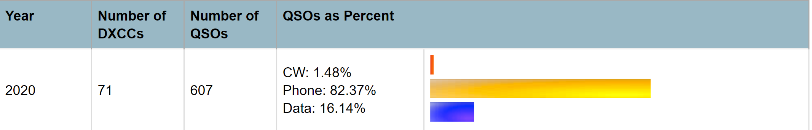

Wow. Some incredible numbers. Been mostly focused on 80m this winter and 6m starting in late March things got really hopping. I don’t make so many QSOs only 607 so far this year but that is putting me in record year zone. In 2011, worked 1300 QSOs and 216 DXCC. I am up to a total of almost 9000 QSOs in about ten years. Maybe once I retire will amass some serious annual numbers like many of you.  I am up to 89 DXCC on 80m confirmed which compared to a year ago is pretty substantial increase. All modes with a lot of SSB into Europe and people who actually confirm on LOTW which seems to be tougher with the standard modes to get people to do LOTW. Appears that FT8 users are more apt to be on LOTW. Think that makes sense. I am up to 43 confirmed on 6m and 51 DXCC worked now. It is a mix of SSB and FT8. 6m is my favorite and I prefer the standard modes. My trick on 6m is to wait until signals reach about 0 dB and then jump down to the DX calling frequency (not many are on it anymore since FT8 is now the mode of choice on 6m), and then call on SSB and CW. I have worked some amazing SSB on 6m this spring so far into South, Central America and deep into the Caribbean. Also got some unique new ones using FT8. Best so far is multiple Uruguay stations on 6m SSB in one afternoon over a period of 12 minutes. The opening was sick and also very short. Really hoping to work my first EU and AF 6m SSB stations in the coming weeks. Should be possible. I have heard EA8 here once on SSB on 6m a few years ago. Will likely mix it up with some FT8 and CW was the go to for DX on 6m for a long time but times be changing. 73, Keith NZ5F |